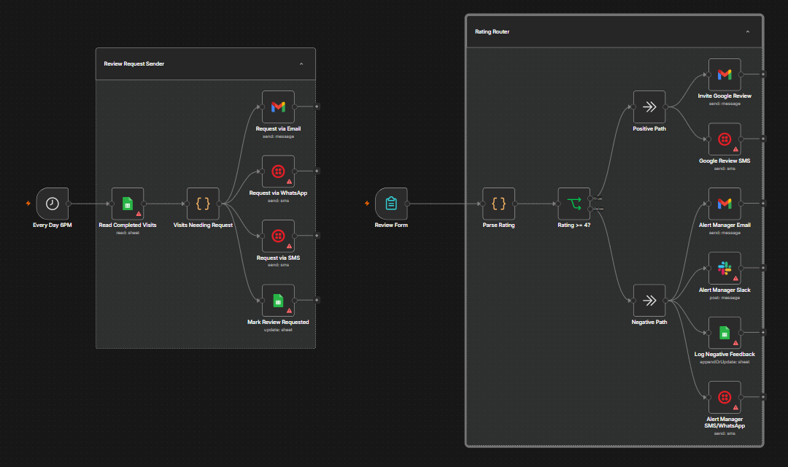

System · 10 of 10
Patient Feedback & Review Automation
Every patient is asked how their visit went, and the review link goes out the same way after every visit.
Problem it solvesReviews that depend on someone remembering to ask
- n8n
- SMS / email API
- Google review link
- CRM
The problem
Feedback and reviews depend on someone remembering to ask. Some patients are asked and most are not, so reviews arrive in bursts, and an unhappy patient goes unnoticed until they post online.
The solution
After each visit the system asks the patient how it went. Every patient receives the review link, and a low score also alerts your manager so the practice can respond personally and quickly. The request is never limited to happy patients.
What it does
- Asks every patient for feedback after a visit
- Sends the review link to every patient
- Alerts your manager when a score is low
- Tracks feedback in one place
- Follows the review platforms’ rules on asking for reviews
- Runs the same way after every visit
What it looks like
Sample text threadTwo hours after the visit
Practice (automated)Thanks for visiting Sample Dental today, Maria. How was your visit? Reply with a score from 1 to 5.
Patient5
Practice (automated)Glad to hear it! If you would like to share your experience, here is my review link: [review link]
- ✓ Score recorded
- ✓ Review link sent
- ✓ Manager alerted only if low
Workflow
- Visit is completed
- Feedback request is sent
- Patient replies with a score
- Review link goes to every patient
- A low score alerts your manager
Behind the scenes

Technology
- n8n
- SMS / email API
- Google review link
- CRM
Want this running in your practice?
See it working first. I will map the workflow around the way your team already works.